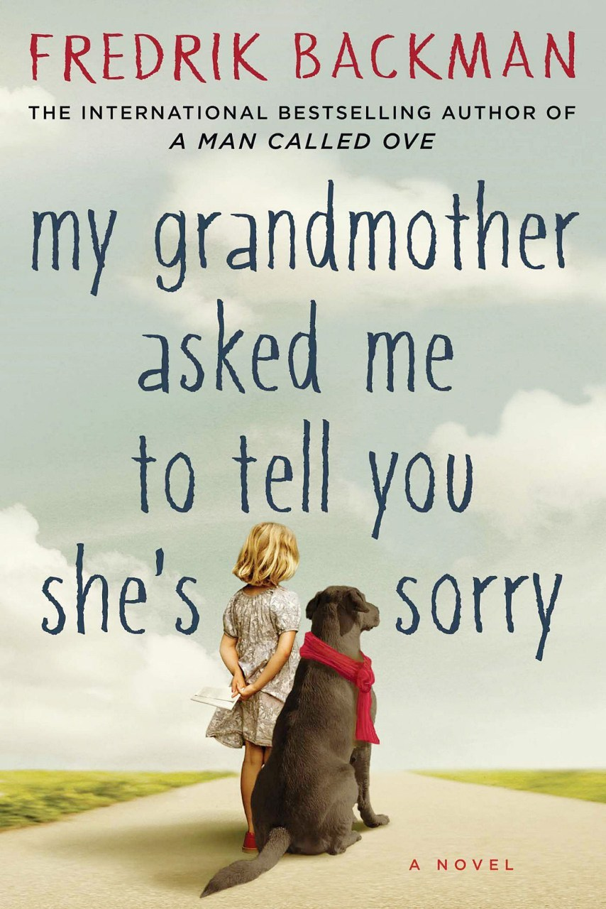

My Grandmother Asked Me to Tell You She's Sorry
- Read on 2020-07-08
- Rating: ️️️️️
- Format: üéß (11 hours 2 minutes)
This is really good, even for someone who's not almost 8, nor a superhero. This is a clever, charming, humorous, nicely interwoven, yet very straight-forward story, with people and situations that feel comfortably familiar (though never having experienced most of them myself). I'm waiting to find a book by Fredrik Backman that I don't really like.
An awfully stated, yet accurate premise: A whimsical, slightly rebellious, grandmother and her imaginative, clever, and inquisitive granddaughter, have a fantastic relationship. And there's a wurse.
- Prior: White Fragility
- Next: Secret History